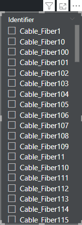
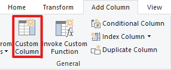
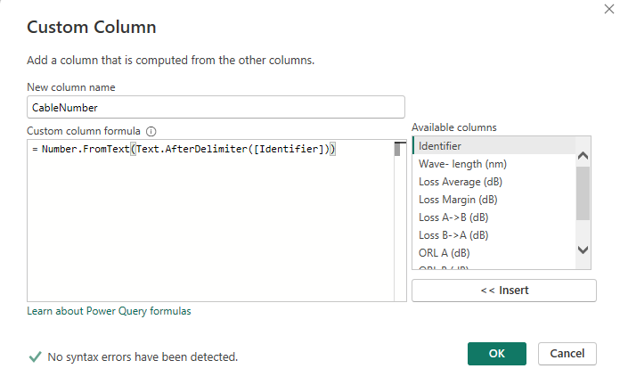
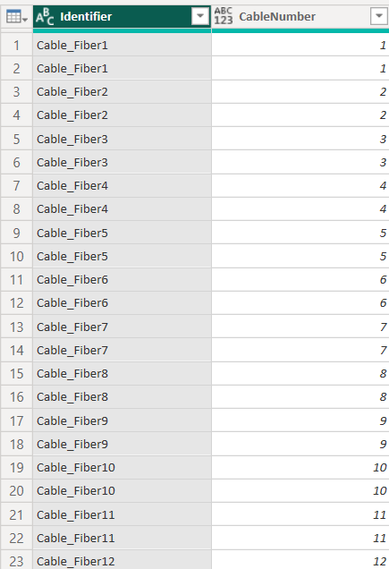
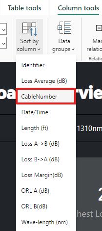
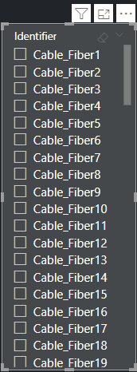
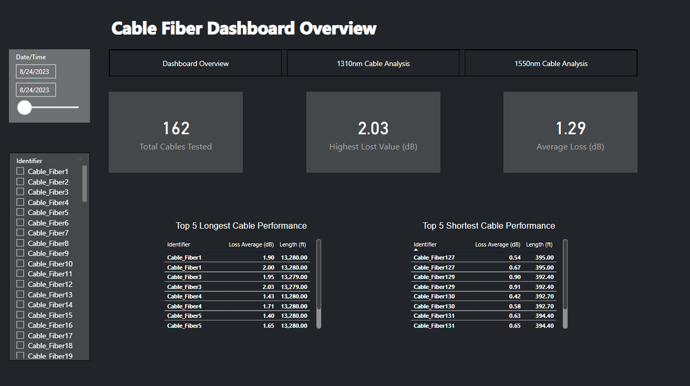
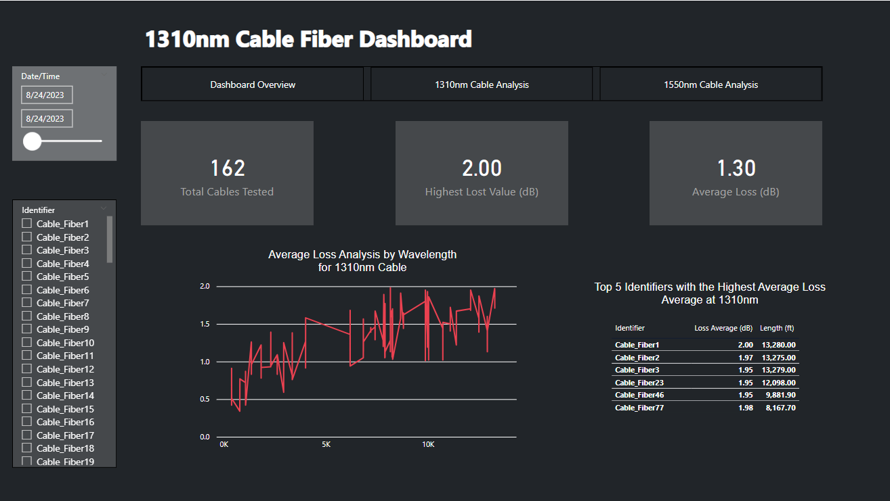
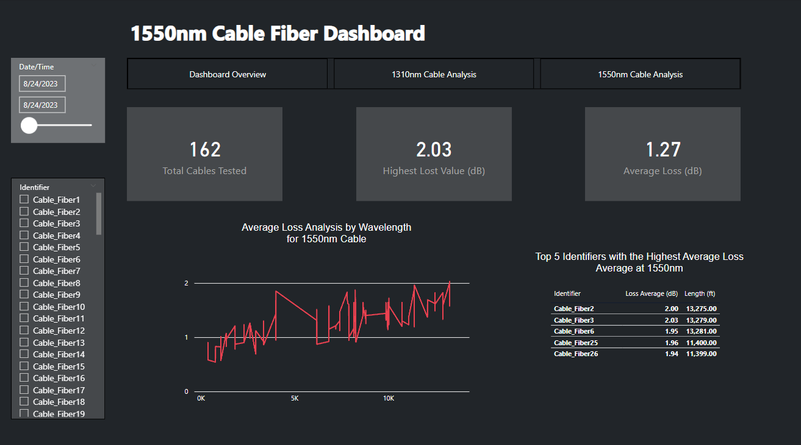
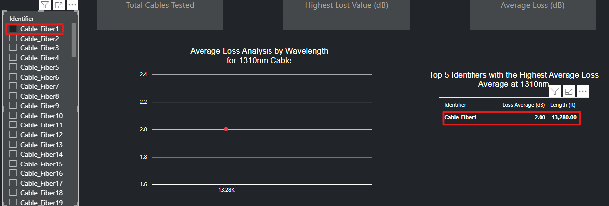

Enhancing Power BI Slicers with the CableNumber Column
Tackling Slicer Sorting Challenges in Power BI
Welcome back, data adventures! In our previous posts, we ventured through the process of cleansing our fiber optic data in Power BI. In this part of our series, we delve into a nifty Power BI trick – transforming the Identifier column to ensure it sorts numerically in slicers. This involves creating a new CableNumber column with a clever formula in Power Query (M language).
The Challenge with Slicers
Our Identifier column, containing values like Cable_Fiber1, Cable_Fiber2, Cable_Fiber3, etc., appears to be in order. However, when we use this column as a slicer in Power BI for visual filtering, the sorting does not display numerically as expected. Instead, it follows an alphanumeric order, leading to a non-intuitive sequence like Cable_Fiber1, Cable_Fiber10, Cable_Fiber100, followed by Cable_Fiber101, and so on.

Creating the CableNumber Column: A Solution
To create a column that would allow for correct numerical sorting in our slicers, we used a formula in Power Query:
= Table.AddColumn(#"Changed Type2", "CableNumber", each Number.FromText(Text.AfterDelimiter([Identifier], "Cable_Fiber")))
Alternatively, to initiate the process of creating a custom column, we can simply click on the Custom Column icon in Power BI. This action leads us to a dialog where we input our formula, laying the groundwork for our new column.

Once in the custom column creation interface, we enter our formula, setting the stage for the transformation we’re aiming to achieve.
 This formula added a new column, CableNumber, by extracting and converting the numerical part from the Identifier column. Let’s break down the key functions used:
Text.AfterDelimiter: This function splits a text string based on a specified delimiter. In our case, it separates the text at Cable_Fiber, isolating the numeric part of our Identifier values.
Number.FromText: After isolating the numeric part, this function converts the text representation of a number into an actual numeric data type. This is crucial as it allows us to perform numerical operations and sorting.
By combining these two functions, we effectively created a column of pure numbers, corresponding to each cable’s identifier.

Implementing Numerical Sorting in Slicers
With the CableNumber column in place, our slicers in Power BI could now accurately sort the cables numerically, from Cable_Fiber1 to Cable_Fiber168.
Sorting Process:
Using the Sort by Column Feature: In Power BI Desktop, we right-clicked on the Identifier column and chose to sort it by our new CableNumber column.

This adjustment brought a logical numerical order to our slicers, greatly enhancing user experience and data analysis accuracy.

Why Power BI Over Tableau for This Dataset
For our specific dataset, involving 168 cables (336 entries including different wavelengths), Power BI’s advanced data transformation features were pivotal. Power BI provided the necessary tools for detailed data manipulation, perfectly catering to our business needs and dataset size.
In Conclusion
As we draw close to the end of this exciting journey, I’d like to give you a glimpse into the final outcome – the Power BI dashboard that was the destination of all our data transformation efforts. These screenshots not only showcase the practical application of our work but also illustrate the power of effectively processed data in creating insightful and interactive visualizations.
Dashboard Overview Screenshot
   Here’s the dashboard in its full glory, where each element and visual has been carefully crafted to provide meaningful insights. Notice how the data, now meticulously organized and sorted, comes to life, offering a clear and interactive experience.
Detailed View Screenshot

Take a closer look at this specific section of the dashboard. It demonstrates how our sorted Identifier column, thanks to the CableNumber sorting, contributes to a more intuitive user interface in our slicers and visuals.
Reflecting on Our Journey
This visual representation is a testament to the importance of detailed data preparation. It underscores how strategic steps in data cleaning, sorting, and transformation directly contribute to the effectiveness of data visualization in tools like Power BI.
Thank you for joining me on this enlightening journey through the field of data science and Power BI. I hope these insights and visuals inspire you to embark on your own data adventures, unlocking the stories hidden within your datasets.
Stay tuned for more explorations and discoveries in the world of data science!